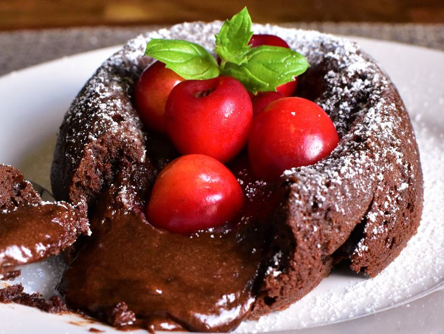

Lava Cake

Description:
The best lava cake I've ever had! Serve these decadent molten chocolate cakes topped with powdered sugar or vanilla ice cream. This recipe makes four delicious individual desserts.
Ingredients:
- 6 1/2 (1 ounce) squares semisweet chocolate, finely chopped
- 1/2 cup butter, cut into 8 pieces
- 3 eggs, room temperature
- 1/2 cup white sugar
- 2 tablespoons all-purpose flour
- 4 teaspoons unsweetened cocoa powder
- 1 pinch salt
Steps:
- Preheat the oven to 400 degrees F (200 degrees C). Grease and flour four 6-ounce ramekins.
- Place chocolate and butter in the top of a double boiler over simmering water. Stir frequently, scraping down the sides with a rubber spatula to avoid scorching, until chocolate is melted, about 5 minutes.
- Combine eggs and sugar in a large bowl; beat with an electric mixer until pale and thick, about 5 minutes. Mix in melted chocolate, flour, cocoa powder, and a pinch of salt until combined. Pour batter into the prepared ramekins and place on a baking tray.
- Bake in the preheated oven until the sides are set but the middle is still jiggly, 10 to 13 minutes. Let cool for 5 minutes before serving.